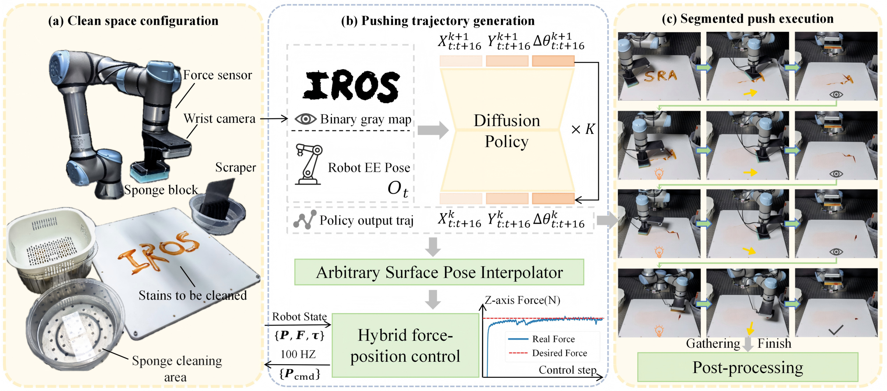
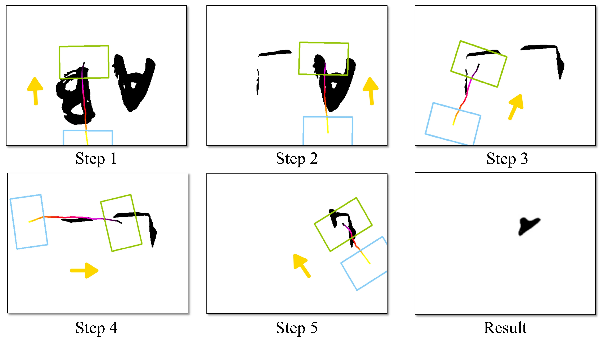
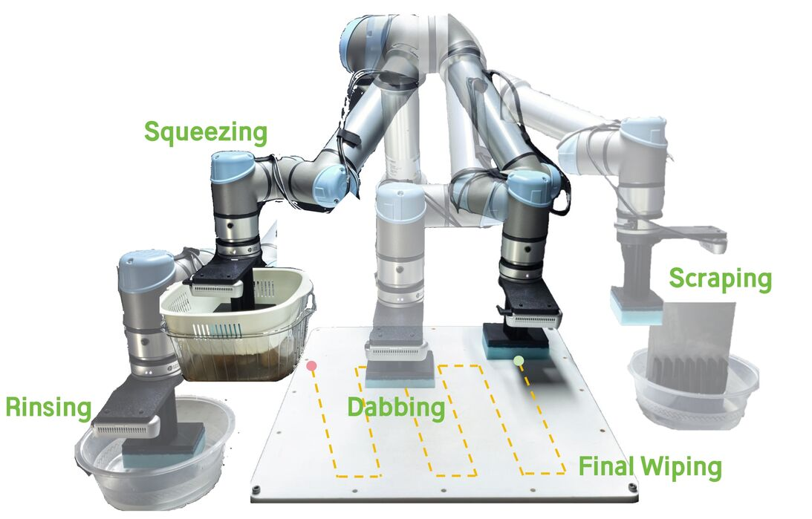
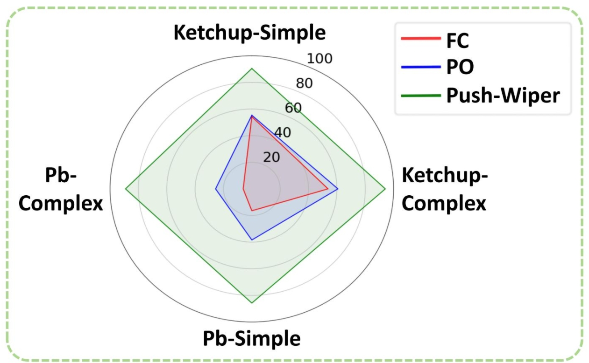
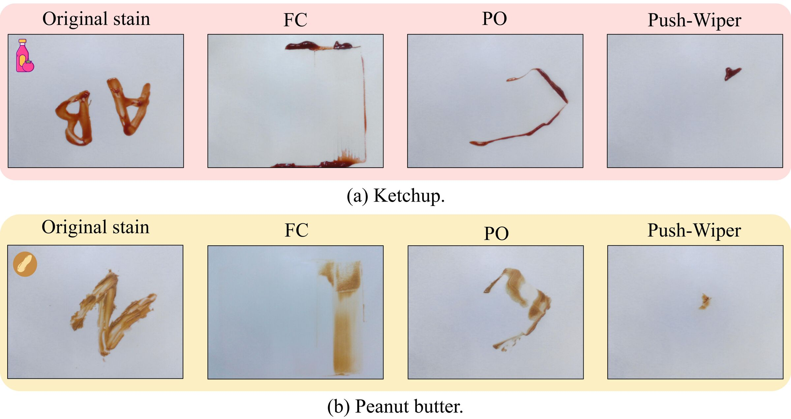
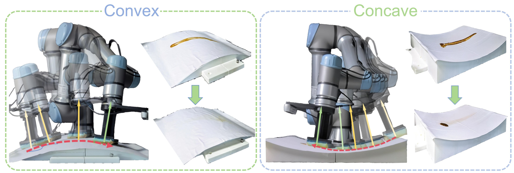
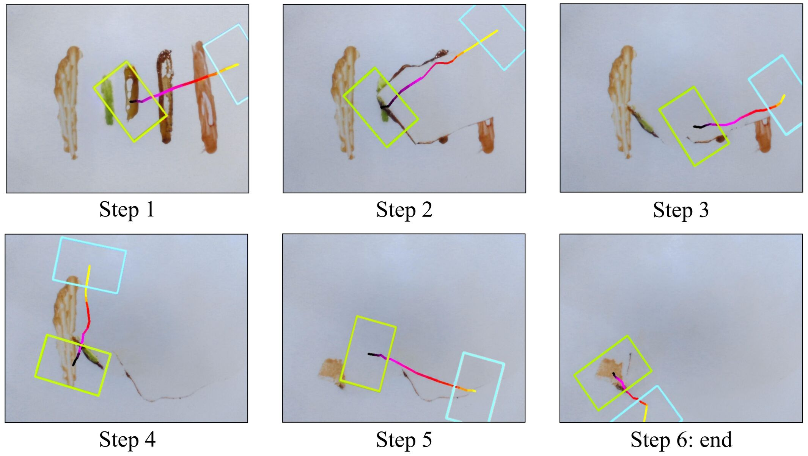
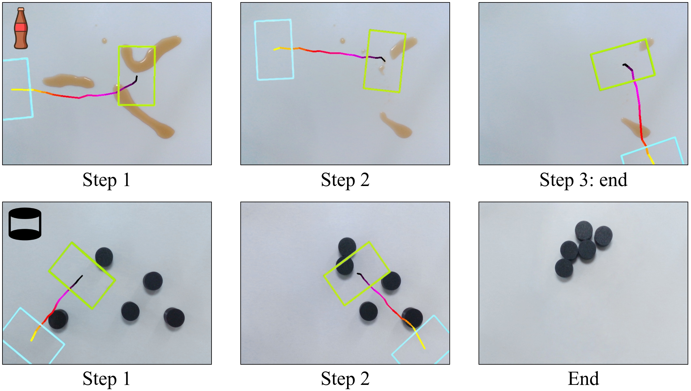

Perceive
Abstract the current stain into a texture-free binary map at a fixed capture pose.
Accepted to IROS 2026
Toward General-Purpose Robotic Cleaning across Varied Stains and Surfaces with Segmented Pushing Trajectories

Overview
Viscous stains resist conventional robotic cleaning: wiping spreads them, while aggressive scrubbing can damage the surface. Push-Wiper instead treats cleaning as a topological aggregation problem.
A low-frequency Diffusion Policy predicts complete segmented pushing strokes from a binary stain map. An Arbitrary Surface Pose Interpolator and hybrid force-position controller then convert each planar action into a smooth, contact-aware 6D trajectory.
Iterative perception-planning-execution progressively contracts the stain into one compact region. Five post-processing primitives detach the residue and self-clean the sponge, completing the task without retraining for new stains or surface geometries.
Video
Method
Abstract the current stain into a texture-free binary map at a fixed capture pose.
Generate a complete 16-action pushing stroke in the compact space of x, y, and yaw.
Use ASPI and 100 Hz hybrid force-position control to follow arbitrary surface geometry.
Detach the gathered residue, clean the sponge, and perform the final wipe.


Results
| Method | Ketchup | Peanut butter | Overall |
|---|---|---|---|
| Full-Cover | 53.99 | 11.28 | 32.64 |
| PushAll-Onetime | 58.04 | 31.99 | 44.98 |
| Push-Wiper | 92.30 | 87.46 | 89.88 |
Mean cleaning score over 20 trials per method and stain type.


Zero-Shot Generalization
Training uses planar viscous-stain tasks. At test time, the same policy transfers to convex and concave geometries, solids, liquids, and novel viscous materials without additional data or retraining.



Final Step
Citation
@inproceedings{lu2026pushwiper,
title = {Push-Wiper: Toward General-Purpose Robotic Cleaning across Varied Stains and Surfaces with Segmented Pushing Trajectories},
author = {Lu, Renhao and Wang, Mingxin and Cao, Chenyang and Yang, Yang and Pan, Guoping and Dong, Kangkang and Cheng, Yi and Liu, Houde},
booktitle = {IEEE/RSJ International Conference on Intelligent Robots and Systems},
year = {2026}
}